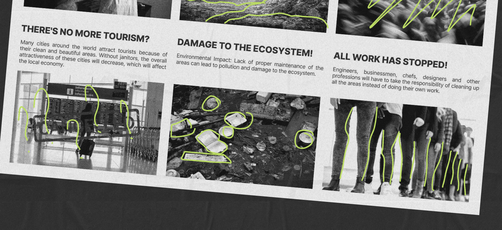
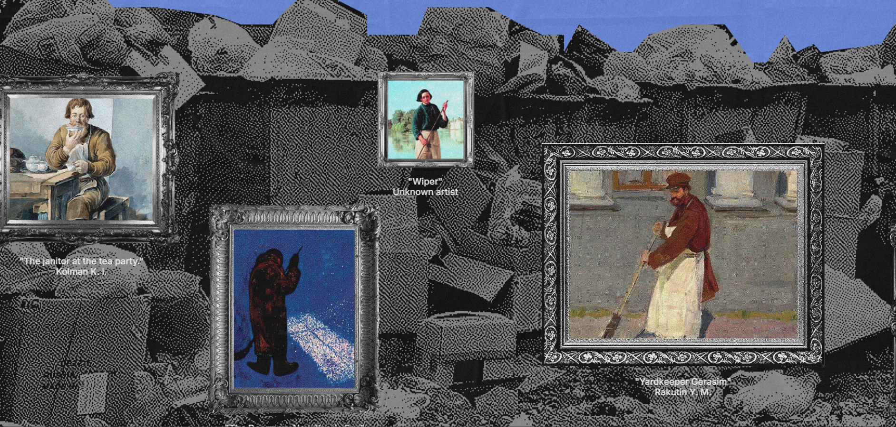
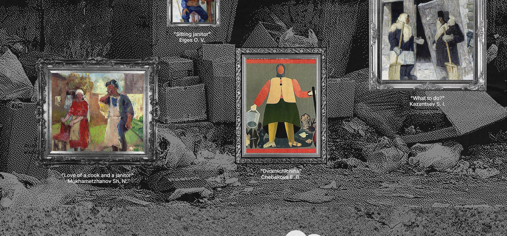

What was the first thing you paid attention to when interacting with the experience?
The first thing I paid attention to when interacting with the experience is the “removed” image of the janitor, which shows their mundane existence society today. Besides that, there are dialogues of people showing disrespect towards janitors and taking advantage of their work.
I also paid attention to the aesthetics and color scheme of the website, which mainly uses black, white, blue and green.
Spend two minutes on the experience and create a list of each of your discrete actions.
- Reading the title which explains the primary goal of the interactive experience.
- the top of the page which leads you to different sections of the website.
- As I scroll down the page,
What part of the experience did you spend the most time engaging with?
I spent most of most time engaging with the part where you click the heart to send kindness to all people in the working professions.
If you click the heart, multiple smaller hearts will appear and float on the page. The more you click, the more hearts will appear and eventually fill the page.
What was the most common action in your two-minute interaction with the experience?
The most common action in my two minutes interaction with the experience is scrolling.
Since the experience is designed as a single scrolling website, some transitions are presented with a series of actions as you scroll though.
What is the intended primary goal of the interactive experience?
The goal of the interactive experience is to educate the audience about the importance of the janitorial profession in society through a creative and immersive method.
It is also to show the significance of professions, ensuring that those in “working” professions are not treated with prejudice, but rather are able to appreciate the labor of others.
How does the interactive experience communicate this primary goal?
To allow users to stay engaged throughout the experience and absorb information easily, a simple, single scrolling webpage layout is used, along with clear navigation and attention-grabbing visuals and colors.
The goal is also achieved through highlighting useful information such as the history of the profession, the importance of their role in society, and what can be done to support the profession.
What is your impression of how the experience should be interacted with over time?
Since the interactive experience is designed to show appreciation and spread awareness about the janitorial profession, it is built for short-term engagement.
However, it can be improved by offering updates such as insights about job conditions of those in the janitorial profession.
How does the interactive experience communicate how it should be interacted with over time?
To allow users to stay engaged throughout the experience and absorb information easily, a simple, single scrolling webpage layout is used, along with clear navigation and attention-grabbing visuals and colors.
The goal is also achieved through highlighting useful information such as the history of the profession, the importance of their role in society, and what can be done to support the profession.
What other media forms (digital or otherwise) does the experience reference?
The experience reminds me of a sketchbook, journal, or school art project where you cut out images from the newspapers and paste them together.
The color theme is also monochromatic to resemble old newspapers and doodles in neon are drawn all over the webpage to imitate scribbling in a sketching while accentuating the images.
What does this reference/s communicate to you about how you should act when engaging with your research experience?
With the media reference of a sketchbook, the website utilizes the idea of scribbling with a marker to draw attention to details they want users to notice.
This also helps describe the meaning of the topic without too much explanation.
This encourages users to pay attention to the details they want them to focus on and linger to read the description.

What does this reference/s communicate to you about how you should feel when engaging with your research experience?
What is the most frustrating part of the interaction to you and what makes that part frustrating?
The most frustrating part of the interaction is the part where paintings of janitors are displayed with an image gallery with a horizontal scroll.
It had an issue with not being able to completely scroll vertically to the bottom of the caption before enabling the horizontal scroll.
However, if you can adjust the scroll to see the bottom of the caption, it switches back to vertical scroll.
Overall, the flaw is you are not able to see the captions of the paintings that are placed at the extreme left of the image gallery.


What is the most satisfying part of the interaction to you and what makes that part satisfying?
The most satisfying part of the interaction would be the section where piles of rubbish would “cover” the Taj Mahal until it is unrecognizable as an instance if there is an absence of the janitor profession in the planet.
The break-down of the interaction would be multiple images of “rubbish” are layered and compiled on the top of the section, then as you scroll, the rubbish would fall on the page and cover the background image.